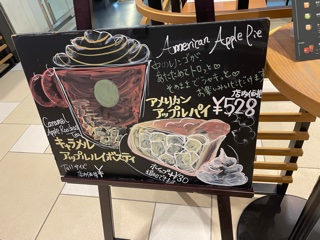
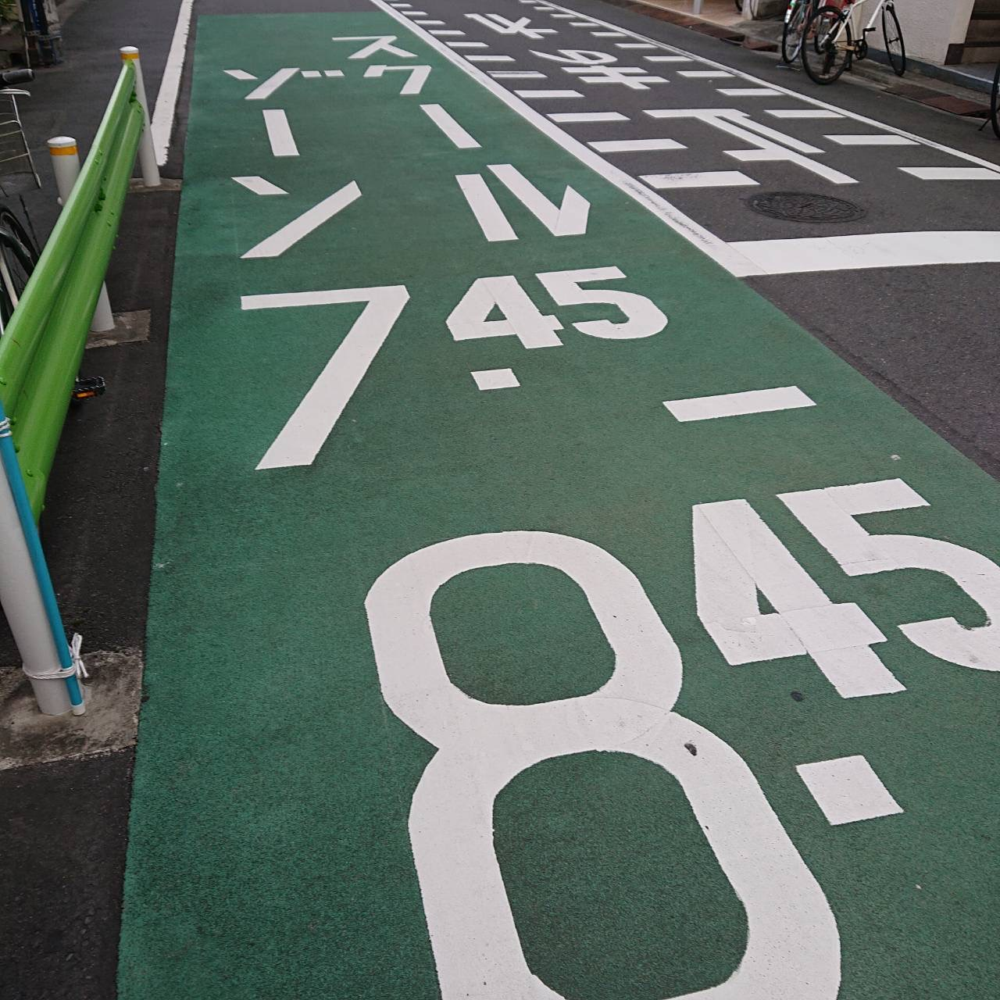
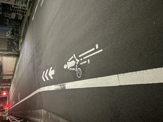

＜課題＞ 看板、サインの撮影
看板１

10/7撮影。スターバックスの看板。本屋にあるようなポップと看板の中間のような作り。限定商品が多くよく入れ替わるので資源的にも無駄にならず店舗ごとの個性を出すことができる
サイン１

10/11撮影。地面上に書かれたスクールゾーンの印。安全性をガードレールに加えて道路に色を加えることで高めている。
サイン２

10/11撮影。地面上に書かれた自転車ゾーンのサイン。自転車の使用が増加してからここ数年で出来た。